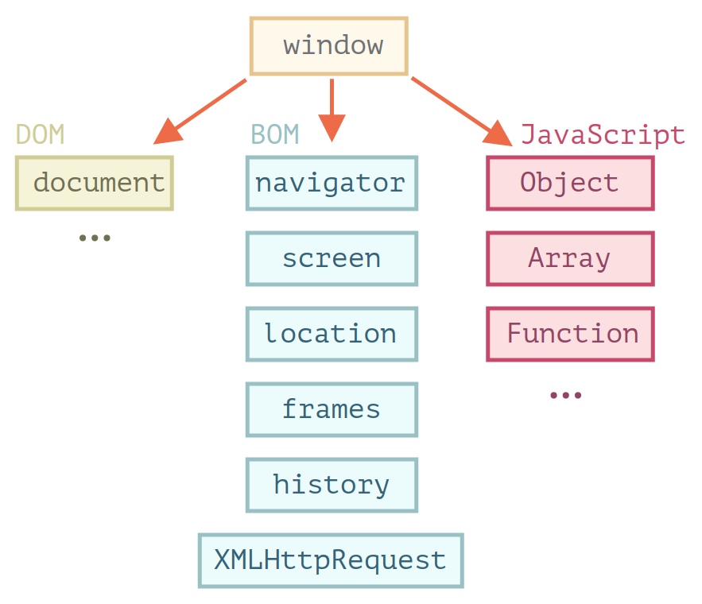
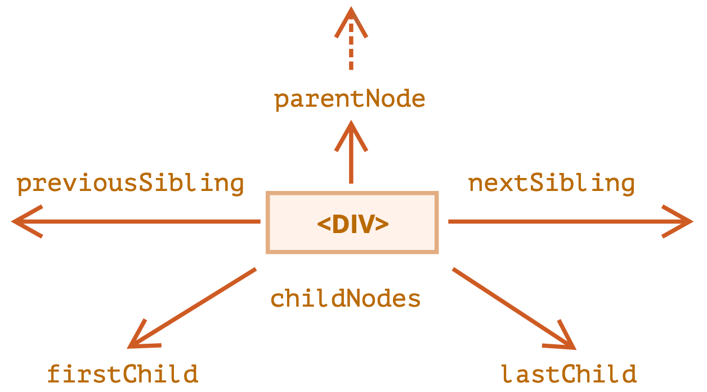
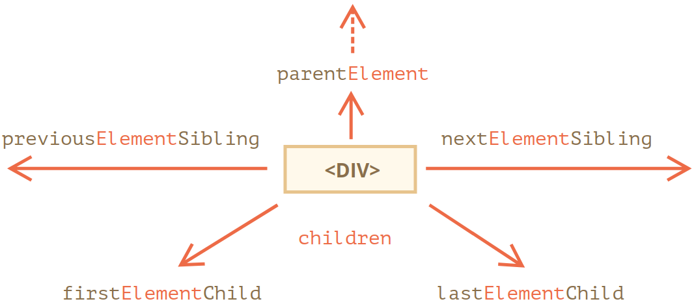
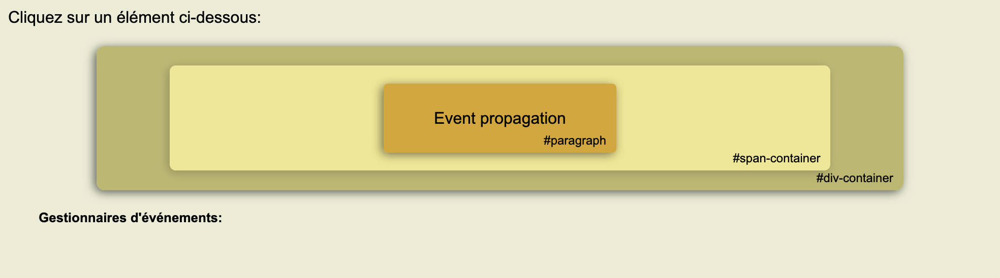
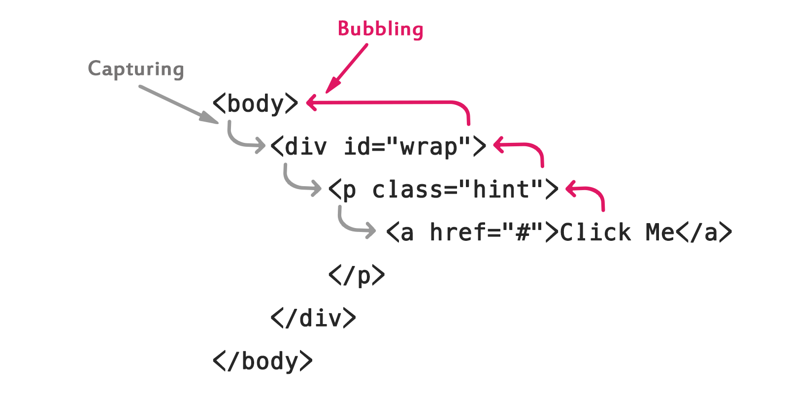
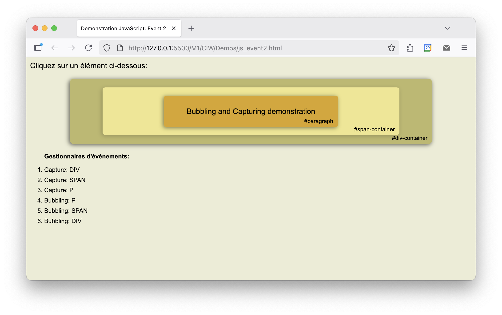

Conception d'Interface Web
JavaScript (2/2)
Environnement hôte
- JS s'exécute dans un environnement hôte
- Le plus courant est le navigateur web
- Fournit des API spécifiques (ci-contre)
windowest l'objet JS racine- représente la fenêtre du navigateur:
window.innerHeight // hauteur de la fenetre
window.innerWidth // largeur de la fenetre
window.open() // ouvre une nouvelle fenetre (onglet)
window.close() // ferme la fenetre active

Document Object Model (DOM)
documentest le point d'entrée de l'API DOM- Objets/fonctions JS pour manipuler les contenus des pages Web
- Rappel: HTML décrit la structure des pages Web
- DOM = objets JS qui représentent cette structure
<html>
<head>
<title>My title</title>
</head>
<body>
<a href="page.html">My link</a>
<h1>My header</h1>
</body>
</html>
Document Object Model (DOM)
Remarques
- L’arbre est ”auto-corrigé” si le HTML est mal formé.
- Par exemple :
- Ajout de
<html>/<body>si manquants - Ajout de balises fermantes si manquantes
- Visualiser le DOM:
- Dans les outils de développement du navigateur
- https://software.hixie.ch/utilities/js/live-dom-viewer/
Parcourir le DOM
- Accès au DOM via
document - Exemples:
document.title: titre de la pagedocument.body: élément <body>document.head: élément <head>- Accés aux éléments fils via la propriété
childNodes
for (let child of document.body.childNodes) {
console.log(child);
}
où children si on ne veut que les nœuds fils de type éléments HTML (sans les textes, etc.)
Parcourir le DOM
Démonstration
let tree = "DOM Tree :
";
for (let child of document.body.children) {
tree += "> " + child.nodeName + "
";
console.log(child);
for (let secondChild of child.children) {
tree += "> >" + secondChild.nodeName + "
";
for (let thirdChild of secondChild.children) {
tree += "> > >" + thirdChild.nodeName + "
";
}
}
}
tree += "
"
document.getElementById("tree").innerHTML = tree;
Parcourir le DOM
- Chaque objet du DOM donne accés à ses proches dans l'arbre via des propriétés
Elementpour accéder uniquement aux éléments HTML


Recherche dans le DOM
- DOM fournit des méthodes de recherche dans l'arbre
getElementById(id): retourne l'élément avec l'attributiddonné
<div id="elem">
<div id="elem-content">Elément</div>
</div>
<script>
let elem = document.getElementById('elem'); // facultatif
elem.style.background = 'red';
</script>
id doit être unique, sinon le comportement n'est pas prévisibleid autorisent des accès directs, sans utiliser la fonction de rechercheRecherche dans le DOM
- Sur le même schéma, méthodes de recherche par type d’élément HTML ou par valeur de
classou dename:
document.getElementsByTagName("p"); // par le nom de balise
document.getElementsByClassName("info"); // par une classe
document.getElementsByName("login"); // par l'attribut de balise 'name'
getElementById, ces méthodes peuvent être appelées à partir d’un élément du DOMRecherche dans le DOM
- Méthodes plus récentes qui s’appuient sur les sélecteurs CSS :
querySelectorAlletquerySelector
<ul>
<li>Le</li>
<li>test</li>
</ul>
<ul>
<li>a</li>
<li>réussi</li>
</ul>
<script>
let elements = document.querySelectorAll("ul > li:last-child");
for (let elem of elements) {
console.log(elem.innerHTML); // "test", "réussi"
}
</script>
Les nœuds
- Chaque nœud dispose de propriétés qui permettent de le manipuler dynamiquement
- La plupart des attributs HTML deviennent automatiquement des propriétés (cf. documentation)
- Exemple: les nœuds
<a>ont tous une propriétéhref - + des propriétés génériques:
nodeName: nom du nœud (balise pour les éléments)nodeType: type du nœud (élément, texte, commentaire, etc.)innerHTML: contenu HTML du nœud (pour les éléments)- La plupart des changements sur les propriétés sont instantanément répercutés sur le rendu de la page
Ajout/suppression de nœuds
- Création de nœud :
createElement(),createTextNode()
let div = document.createElement("div");
div.className = "alert";
div.innerHTML = "Ceci est un message important";
append(), prepend(), before(), after(), replaceWith()
document.body.append(div);
div.after("Mais pas ceci"); // on peut insérer du texte à la place d'un nœud
remove()insertBefore(), insertAfter(), replaceChild(), removeChild(), appendChild()Styles et classes
- Propriété
stylequi correspond à l’attribut HTMLstyle - L’utilisation de cet attribut est généralement déconseillé (cf. chapitre sur CSS)
- Idem en JS : préférable d’utiliser un CSS externe et de s’appuyer sur les classes
- Pour cela :
className
<main class="home">...</main>
<script>
let main = document.querySelector("main");
console.log(main.className); // "home"
</script>
Styles et classes
- Pour utiliser plusieurs classes :
classList - Objet JS particulier avec les méthodes
add,remove
let main = document.querySelector("main");
main.classList.add("active"); // ajoute la classe 'active'
main.classList.remove("home"); // supprime la classe 'home'
main.classList.toggle("dark-mode"); // ajoute ou supprime 'dark-mode'
contains() pour vérifier la présence d'une classeÉvénement
- Un événement = signal indiquant que quelque chose s’est produit, auquel on peut vouloir réagir
- Exemples d'événements dans un navigateur web :
- L'utilisateur clique sur un bouton
- Une page web a fini de se charger
- la soumission de données d’un formulaire
- l’activation d’une combinaison de touche du clavier
- le déplacement du curseur de la souris
- etc.
- Liste des événements: MDN Web Docs, JavaScript.info
Gestionnaire d'événements
- Un événement est généralement associé à un élément de la page
- C'est le noeud du DOM correspondant qui "capture" l'événement
- Exemple :
- Un clic sur un bouton HTML
- Le nœud
<button>correspondant capte l'événement "click" - Pour réagir à cet événement, on peut définir un gestionnaire d'événements
- Un gestionnaire est une fonction JS qui sera exécutée lorsque l'événement se produira
Gestionnaire d'événements
- Plusieurs moyens d’assigner un gestionnaire à un nœud du DOM
- Le plus simple : attribut HTML nommé
on<event>où<event>est à remplacer par un type d’événement :
<script>
function sayHi() {
alert("Hi!");
}
</script>
<input type="button" onclick="sayHi()" value="Say Hi!">
<!-- ou -->
<input type="button" onclick="alert('Hi!')" value="Say Hi!">
Gestionnaire d'événements
- Alternative: utiliser la propriété correspondante du nœud du DOM
<input id="elem" type="button" value="Say Hi!">
<script>
let elem = document.getElementById("elem");
elem.onclick = function() {
alert("Hi!");
};
</script>
Gestionnaire d'événements
- Méthode recommandée :
addEventListener()(etremoveEventListener())
function handler() {
alert("Hi!");
}
elem.addEventListener("click", handler);
elem.removeEventListener("click", handler);
- Plusieurs gestionnaires par type d’événement
- Séparation entre le code HTML et le code JS
- Fonctionne avec tous types d'événements (e.g.
DOMContentLoaded)
Objet event
- Un gestionnaire peut capturer un
eventqui encapsule des informations sur l’événement - Souvent indispensable pour gérer l’événement correctement :
function handler(event) {
// affiche le type d'événement, l'élément HTML et les coordonnées du 'clic'
alert(event.type + " at " + event.currentTarget);
alert("Coordinates: " + event.clientX + ":" + event.clientY);
}
elem.addEventListener("click", handler);
event dépendent de la nature de l'événementevent.type donne le nom de l’événement (e.g. "click")Objet event
Exemple de propriétés d'event
type: type d'événement (e.g. "click")target: nœud du DOM qui a capturé/déclenché l'événementcurrentTarget: nœud du DOM auquel le gestionnaire est attachéclientX,clientY: coordonnées de la souris lors d'un clickey: touche du clavier pressée lors d'un événement clavierbutton: bouton de la souris pressé lors d'un événement de souris- etc.
Propagation des événements
- Quand un événement est capturé, il se propage à travers le DOM
- Par exemple :
- Un événement est capturé par un nœud du DOM
- S’il existe, son gestionnaire est exécutée
- Puis l’événement est transmis au nœud père
- S’il existe, le gestionnaire de ce nœud parent est exécuté
- Puis l’événement est transmis au nœud grand-père
- et ainsi de suite...
Propagation des événements
Démonstration
<div id="div-container" class="element">
<span id="span-container" class="element">
<p id="paragraph" class="element">
Event propagation
</p>
</span>
</div>

Capture et Bubbling
- La propagation comporte en fait 2 phases :
- Phase de capture : l'événement est transmis du nœud racine jusqu'au nœud cible
- Phase de bubbling : l'événement remonte du nœud cible jusqu'au nœud racine

Capture et Bubbling
- Un gestionnaire est associé à une phase et ne s’exécute que pendant cette phase
- Par défaut, un gestionnaire est associé à la phase de bubbling
- Pour l’associer à la phase de capture :
element.addEventListener('click', handler, true); // phase de capture
element.addEventListener('click', handler, false); // phase de bubbling (par défaut)
- Traitement plus naturelle en phase de bubbling
- Les gestionnaires sont ajoutés par défaut au bubbling
Stopper la propagation
- Pour stopper la propagation d’un événement :
- Utiliser la méthode
stopPropagation()sur l’objet événement - Utiliser la méthode
stopImmediatePropagation()pour stopper tous les gestionnaires d’événements - Si un noeud à plusieurs gestionnaires pour le même événement,
stopPropagation()arrêtera la propagation, mais pas l'exécution des gestionnaires sur ce noeud stopImmediatePropagation(): pour stopper la propagation d’un événement dans tous les gestionnaires- Recommandation : ne stopper la propagation que si c'est absolument nécessaire
Propagation des événements
Démonstration
